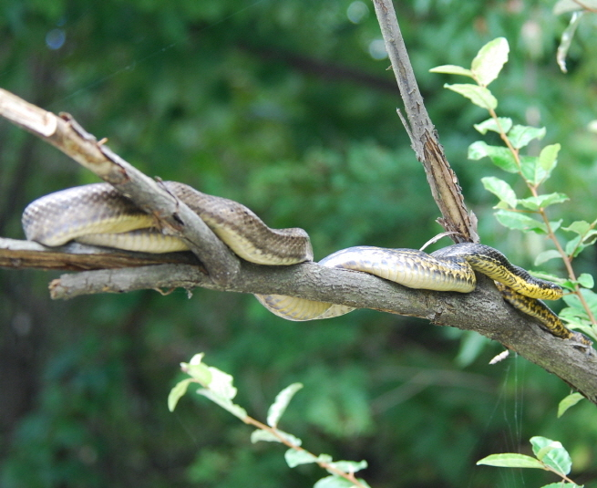

구렁이

주요특징 및 설명
종명: 구렁이(Korean ratsnake)
학명: Elaphe schrenckii
생물학적 분류: 유린목 뱀과
분포: 한국 · 중국 · 시베리아
등급: 멸종위기종 Ⅱ급
주요 특징
구렁이는 다양한 무늬를 띄는데, 특히 먹구렁이과 황구렁이를 많이 볼 수 있다. 설치류를 비롯한 소형 포유류와 새를 주로
잡아 먹으며, 독이 없어 몸통으로 조여서 통째로 삼킨다.